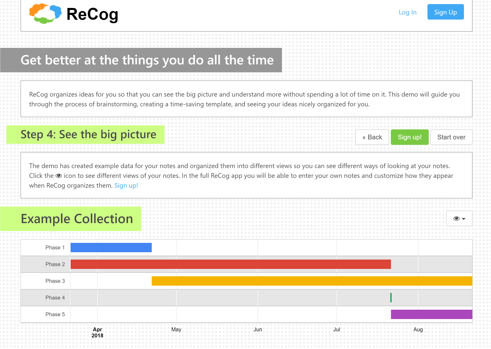

Simplify a complex app for faster testing.
Recog, 2017

Try ReCog Demo
- Organize demo in a wizard format to streamline the process of structuring notes, generating sample notes, and creating visualizations.
- Allow users the choice to personalize or to skip steps in favor random / pregenerated data.
- Make inferences about which visualizations to present based on the type of data in the notes.